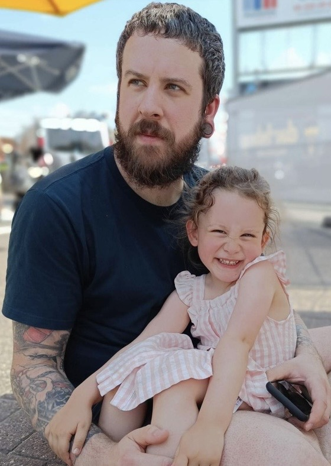

| Meet the Team |  |
|---|---|
| Naam: | Anthony Vandewalle |
| Leeftijd: | 35 |
| Woonplaats: | Waarschoot |
| Wanneer ben je begonnen met darten: | 3 jaar geleden |
| 1ste dartpijlen: | Target Bolide 02 25gr |
| Darts die ik gebruik: | RedDragon Luke Humphries Prestige 24g |
| Favoriete pro dartspelers: | Michael Smith & Luke Humphries |
| Favoriete dartsmerk: | Shot & RedDragon |
| Tip voor iedereen: | Geniet van het spelen en de rest komt van zelf! |